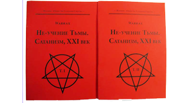
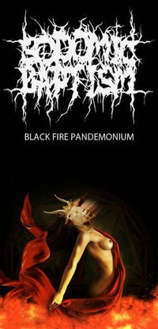

Black Fire Pandemonium
Сайт, помимо основного адреса warrax.net, имеет зеркало warrax.info (пока обновляется с некоторой задержкой).
|
 НЕ-Учение Тьмы. Сатанизм, XXI век |
|
проект «Δαίμων» |
|  |
Последние добавления: 31.07.2016
- Ad usum externum Liber VII:13: Где брать адекватные материалы по сатанизму?
- Поведение (pdf) — К. Крылов (с приложениями Джагга и моими комментариями) — добавлен вариант fb2
- Добавил 7 картинок в раздел "Религия: наука" [29]
29.07.2016
- Rat's FAQ 3a: Клетки: мой опыт и ошибки (видео)
- Признаки настоящего крысовода (добавлено)
- Упорядочил видео по обоим каналам на тытрубе
- Добавил 5 картинок в раздел "Религия: вера" [110]
24.07.2016
- Ad usum externum Liber VII:12: Как соотносятся сатанизм и фашизм в дугинской трактовке?
- Крысофото за июнь
- Добавил 2 картинки в раздел "Религия: церковь" [54]
22.07.2016
- Классические доказательства бытия божия (добавлено к первому)
- Апории Зенона: воз и ныне там — Р. Хазаpзаp
- Гегелевская диалектика в советской России — Бродский А.И.
- Добавил 5 картинок в раздел "Религия: вера" [105]
- Мои работы (последнее добавлено 31.07.2016)
- Проект «Δαίμων»
(последнее добавлено 08.06.2016)
- Satanic Oldschool Death Metal group «Sodomic Baptism» (обновлено 29.04.2015)
- другое видео от «Δαίμων» (последнее добавлено 29.04.2015)
- Видеолекции по логике (последнее добавлено 28.06.2016)
- Сатанинское (последнее добавлено 31.07.2016)
- Социальное (последнее добавлено 31.07.2016)
- Социалистическое (последнее добавлено 09.07.2016)
- Гносеологическое (последнее добавлено 22.07.2016)
- Религиоведное (последнее добавлено 22.07.2016)
- Научное и историческое (последнее добавлено 25.05.2016)
- Соционика (последнее добавлено 17.06.2014)
- Прозаическое (последнее добавлено 08.07.2016)
- Поэтическое (последнее добавлено 21.06.2014)
- Кинематографическое (последнее добавлено 19.05.2016)
- Крысы (последнее добавлено 29.07.2016)
- Поучительные картинки (последнее добавлено 21.07.2016)
- FAQ по возвращению права на ношение короткоствольного оружия в России v. 1.12 (10/04/11)
- Журнал CONTRA DEI 1-2
Если кто хочет написать, то адрес известен: warrax@warrax.net (ставить понятный subj!)
LiveJournal: http://darkhon.livejournal.com/
Канал YouTube WarraxBFP: https://www.youtube.com/channel/UChsiudPZ0kQd-_Jyxel-bQw
Канал YouTube DaimonBFP: http://www.youtube.com/DaimonBFP
На умные вопросы я всегда стараюсь ответить, но не стесняйтесь напоминать, если задерживаюсь с ответом.
Уведомление. Cайт восстановлен, убрано много-много всяческой шняги. Если кто считает, что я убрал что-либо путное, то пишите в почту, посмотрю ещё раз (книги восстанавливать не буду, всё есть в инете и так). Оформление и движок намечены к концу года, раньше не получится. Сайт сделан на чистом HTML, и поэтому легко копируется любой сайтокачалкой с дальнейшей периодической синхронизацией.